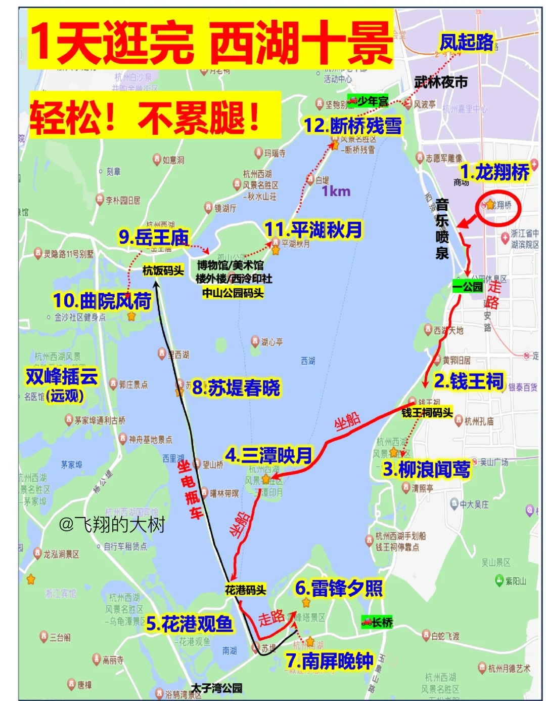
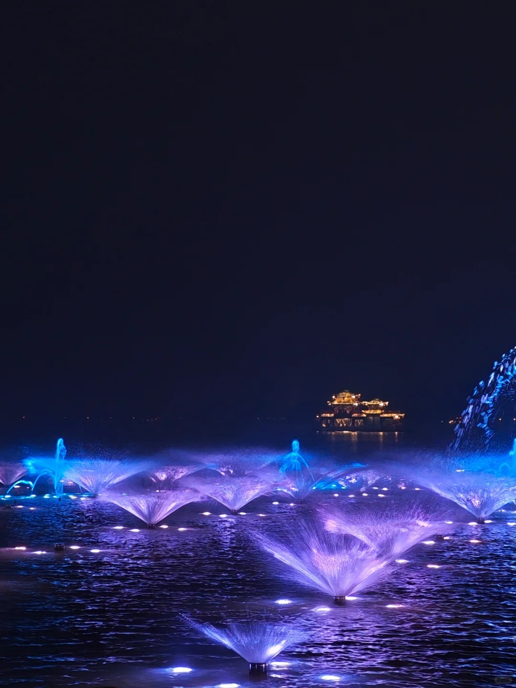
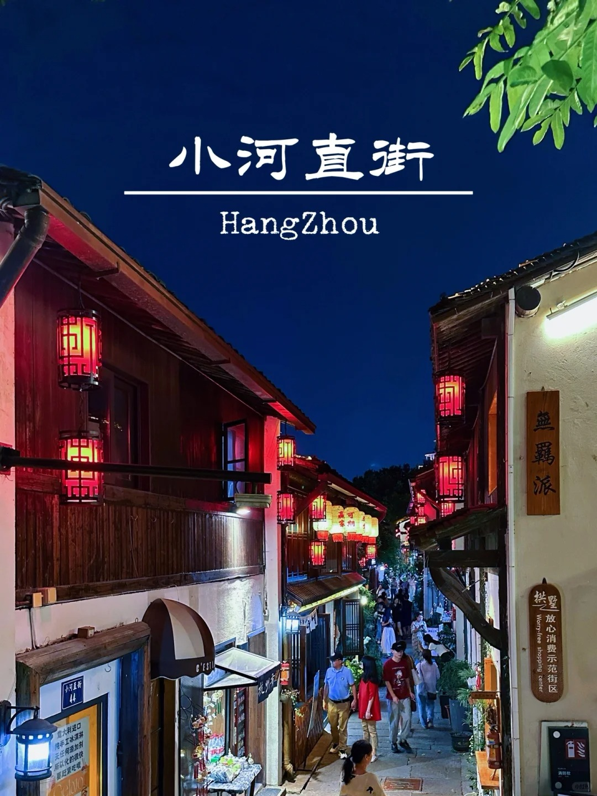
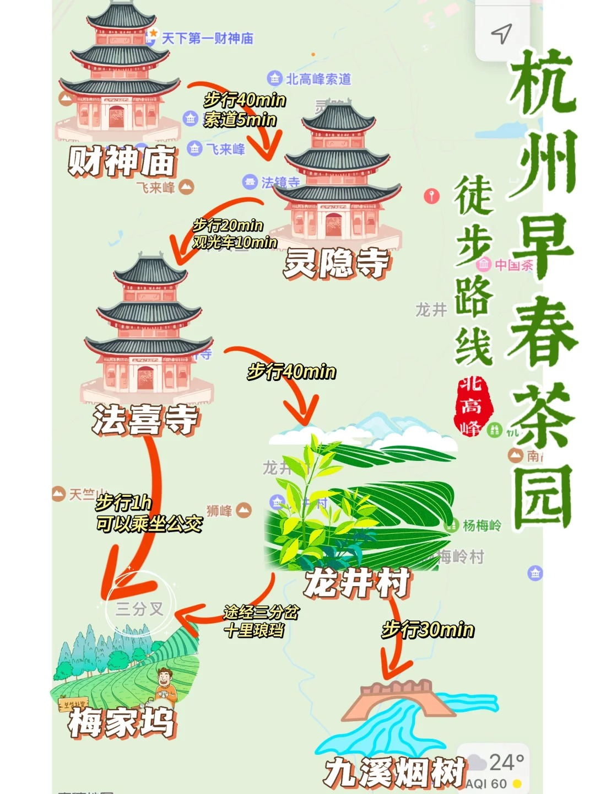
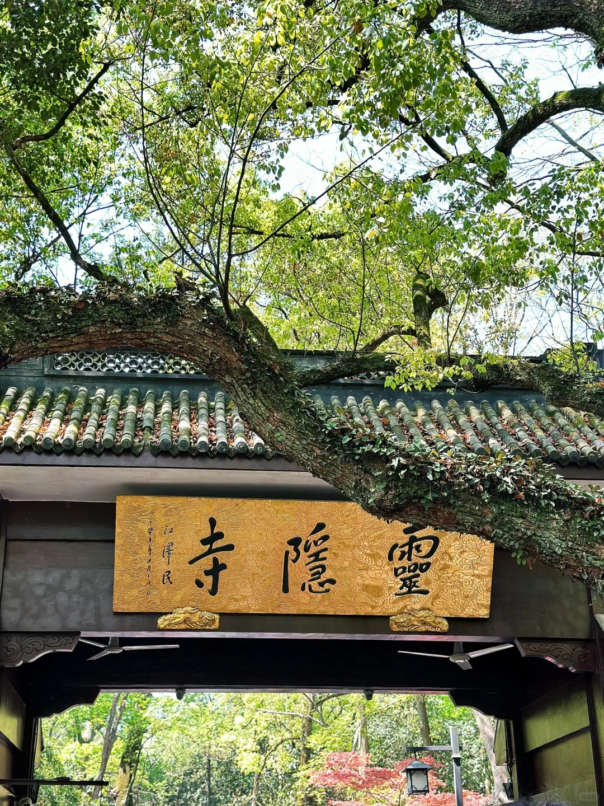
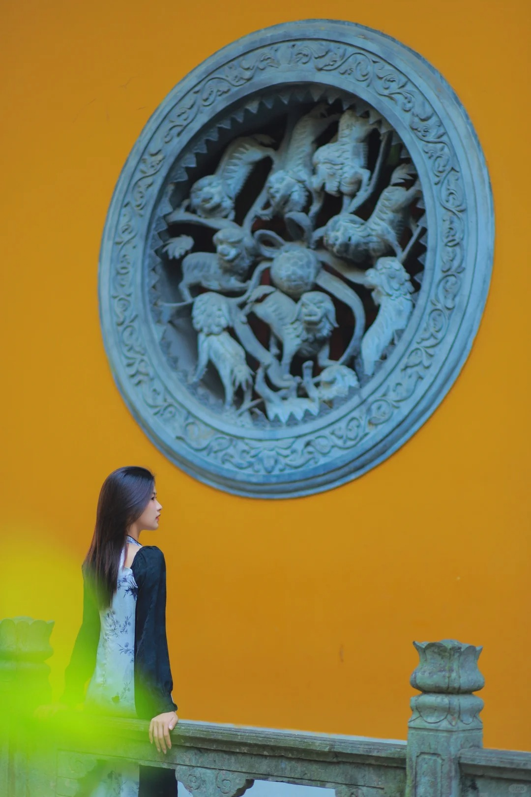
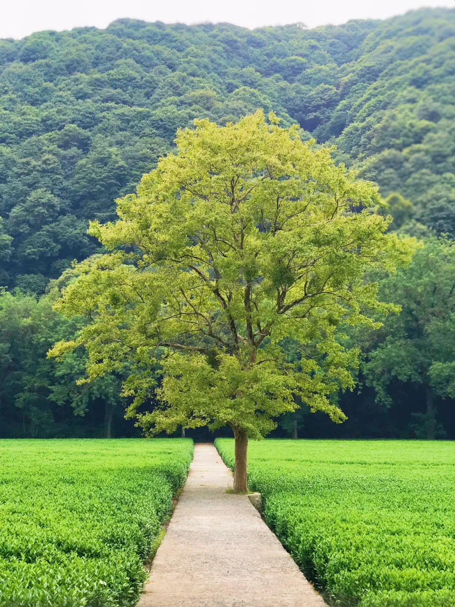

江浙沪四日行程
深圳出发，主要走杭州、南浔古镇、乌镇、上海。
行前准备
天气情况
多云，18~26°C
需要准备薄外套、雨伞等。
------景点预约
4月19日
- 西湖旅游公众号
- 钱王祠，￥15
- 岳王庙：￥25
- 美团
- 雷峰塔：￥40
- 现场购票：
- 三潭印月上岛游：￥55，现场购票
4月20日
- 西湖旅游公众号
- 北高峰索道：￥30
- 飞来峰：￥45
- 现场购票：
- 灵隐寺：￥30
- 法喜寺：￥10
4月21日
4月22日
4月19日
上午
深圳->杭州
| 航班信息 | 起降时间 | 起降机场 |
|---|---|---|
| 深航ZH9873 | 07:20 - 09:10 | 宝安国际机场T3 - 萧山国际机场T3 |
| 南航CZ3569 | 08:00 - 10:05 | 宝安国际机场T3 - 萧山国际机场T4 |
午餐
- 弄堂里(湖滨银泰in77C区店)：臭豆腐、甜糕、龙井虾球、叫花鸡
- 知味观（湖滨店）：三鲜小笼，脆皮糯米藕，知味馄饨
- 楼外楼（西湖景区孤山路店）：西湖醋鱼，宋嫂鱼羹，虾爆鳝面
下午
路线图总览

集贤亭
观赏日落真的很美，湖中亭台，一侧还有荷塘，还有很多野鸭，以及手划船，远处是青山黛色，真的很美。
三潭印月
三潭印月，西湖十景中唯一需要乘船才可以参观的景点。三潭印月岛(又称小瀛洲)。俯瞰整个小瀛洲犹如一个“田字，园林富于空间层次变化，造成“湖中湖”“岛中岛”“园中园”的境界。岛南湖中建成有三座石塔，相传最初为苏东坡在杭疏浚西湖时所创设，月明之夜，塔中点燃灯光，真月和假月其影确实难分故得名“三潭印月”。
南屏晚钟
具体指:南屏山净慈寺傍晚的钟声，西湖十景中问世最早的景目，也是唯---个以声音命名的西湖十景。净慈寺始建于954年，是一座皇家寺庙。寺内的钟楼上层悬大梵钟，下层为净慈寺地藏殿。大梵钟高3米，口径2.3米，重10余吨。钟声敲响，振荡频率传到山上形成悠扬共振齐鸣的钟声。
苏堤春晓
苏堤南起南屏山麓，北到栖霞岭下，全长近3千米。北宋文人苏轼用疏浚西湖时挖出的湖泥堆筑了一条南北走向的长堤，后人为了纪念苏东坡治理西湖的功绩将她命名为苏堤。
西冷桥
路的尽头是海，是遇见杭州最美的转角。
音乐喷泉
19:30开始，连续播放四首歌曲，总时长15-20分钟，第一排绝佳视野，最晚18：30前要进场。

玉皇山
玉皇山至高点，可以俯瞰西湖，上面的江湖一览亭可以看到雷峰塔、西湖文化广场、望宸阁三点一线。
晚餐
武林夜市
夜晚
小河直街/拱宸桥西历史文化街区
小河直街：武林门码头坐船🚢，到拱宸桥——桥西历史文化街区——小河直街，更加切身体会江南水乡的风情。
可选时间19：00；20：00，需提前预约。

住宿
北高峰索道附近
4月20日
上午
线路总览

北高峰财神庙
天下第一财神庙 ，北高峰索道售票处坐索道，上山30元，下山20元，索道营业时间是8:00—16:45。
飞来峰
灵隐寺景区位于杭州西湖风景名胜区西部的山峰之间，因其周边山水禅意隐现，被称为“灵隐禅踪”，它由“灵隐寺”（见下篇）和“飞来峰”两部分构成。飞来峰，又名灵鹫峰，山体由高约168米的石灰岩构成，因慧理所述“此乃中天竺国灵鹫山之小岭，不知何以飞来？”而得名。
灵隐寺
整体是恢弘大气的感觉，一共有5个殿：大雄宝殿（求财求事业）、天王殿（保平安吉祥）、观音殿（求姻缘子嗣）、药师殿（保健康长寿）、华严殿（求事业学业）， 去之前记得提前准备好纸币和硬币，纸币投入功德箱，硬币放入许愿池。

法喜寺
寺庙整体建筑风格典雅古朴，给人一种宁静祥和的感觉。

龙井村
800亩高山茶园，鳞次栉比，西湖龙井的原产地。龙井茶3月采摘，明前龙井，是指清明节之前采的茶叶🍃，这时的茶，一芽一叶初展，滋味醇厚，清纯持久。
三分叉
三分叉，这里是最精华部分，俯瞰眺望西湖，漫山的茶园连绵不绝，视野很开阔，非常治愈。
十里琅珰
从龙井村牌坊处大约半小时即可达到，可以远眺西湖，从山上往下看漫山遍野的茶树，随便拍拍都有航拍视角
梅家坞
梅家坞是西湖龙井的核心产区之一。

午餐
梅家坞附近
下午
杭州 -> 南浔古镇
- 顺风车
- 梅花坞 --> 武林广场 --> 南浔古镇
---------------
乌镇
西栅景区
4月21日
乌镇 -> 上海
上海城隍庙
上海外滩夜景
南京路步行街（住人民广场附近）
4月22日
中华艺术宫/复旦大学
东方明珠
上海-深圳
| 航班信息 | 起降时间 | 起降机场 |
|---|---|---|
| **** | ||
| **** |